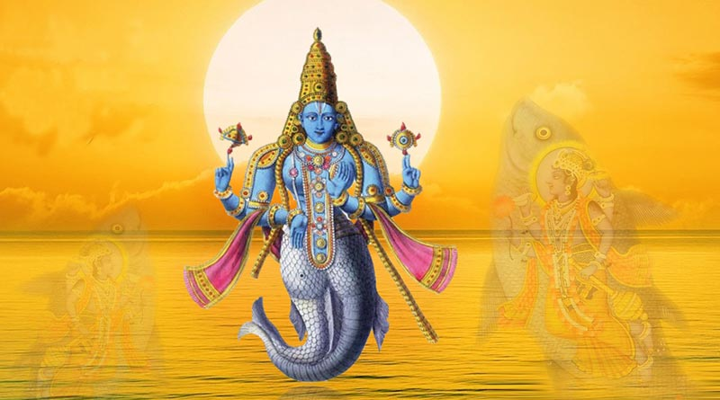
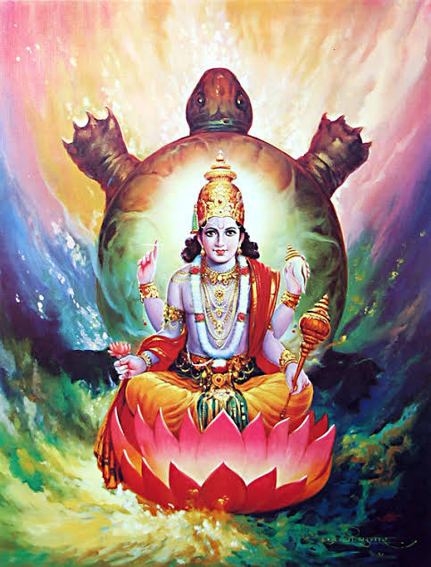
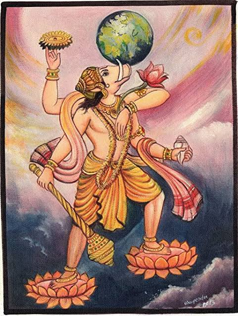
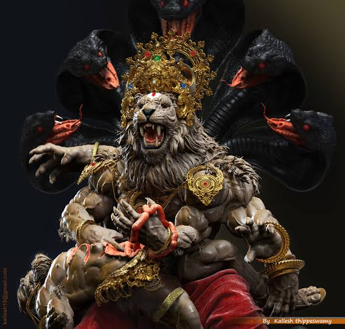
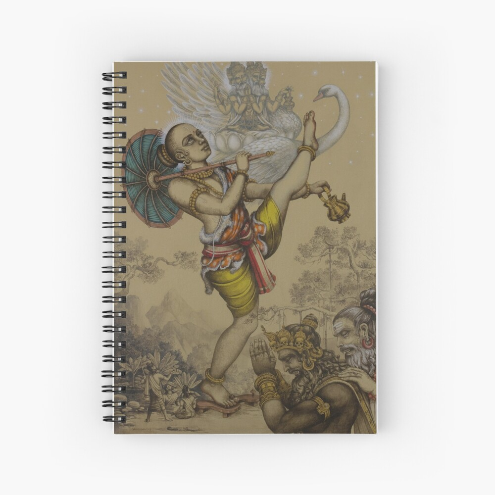
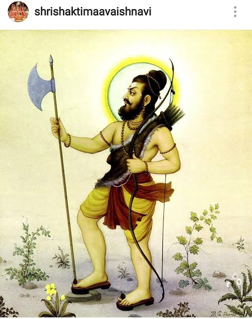
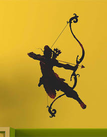
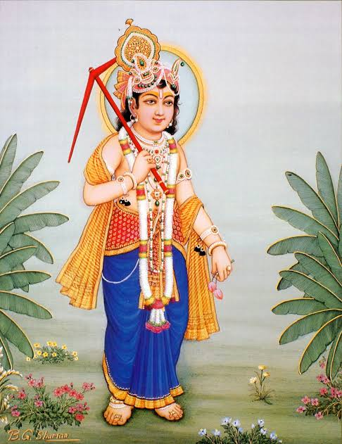
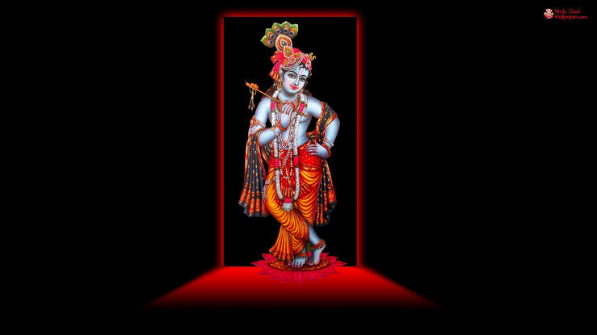
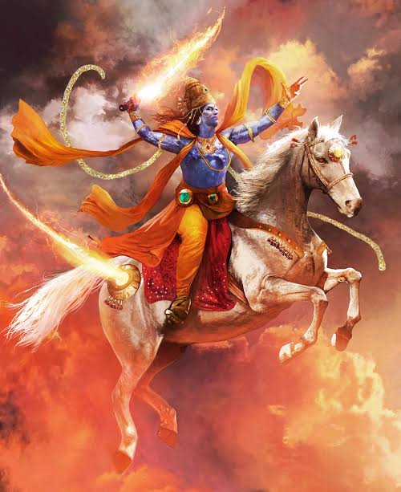

| Serial No. | Dashavatar Avatar |
|---|---|
| 1 | Matsya |
| 2 | Kurma |
| 3 | Varaha |
| 4 | Narasimha |
| 5 | Vamana |
| 6 | Parashuram |
| 7 | Lord Ram |
| 8 | Lord Balaram |
| 9 | Lord Krishna |
| 10 | Kalki |
It is believed that whenever there is an evolution in the history of mankind, God incarnates on earth to restore the cosmic order. As mentioned in the holy Bhagavad Gita, "Whenever there is a decline in righteous and wherever there is a predominance of unrighteousness. I incarnate on earth"- Bhagavad Gita 4:7. Hindu mythology has various fascinating stories to tell. One of them is that of Lord Vishnu and his 10 incarnations or swaroop. Collectively known as Dashavatara or ten incarnations, the Preserver of the Universe, takes one form, each time the mankind is in danger or when evil and tyranny overpowers righteousness.


-
Matsya
 Matsya, (Sanskrit: “Fish”) one of the 10 avatars (incarnations) of the Hindu god Vishnu. In this appearance Vishnu saved the world from a great flood. ... Matsya may be depicted either in animal form or in a combined human-animal form, with the man as the upper half and the fish as the lower half. Vishnu Puran Written Update May 22, 2020: Matsya killed Hayagriva and Vishnu took the Vedants. Manu took all 7 Rishis and Shatarupa to form a new life on earth.
Matsya Stotram
-
kurma
 Kurma Avatar Kurma, (Sanskrit: “Tortoise”) one of the 10 avatars (incarnations) of the Hindu god Vishnu. In this incarnation Vishnu is associated with the myth of the churning of the ocean of milk. ... The Kurma avatar of Vishnu is usually represented in painting and sculpture in a mixed human-animal form. They have three boar sons named Suvrtta, Kanaka, and Ghora. Varaha and his progeny create mayhem in the world. The gods go to Varaha to abandon his boar form. Vishnu requests Shiva to take the form of Sharabha (also called Varaha Shiva), to kill the body of Varaha and the three sources of havoc.
Kurma Stotram
-
varaha
 Varaha (Sanskrit: वराह, Varāha, "boar") is the avatar of the Hindu god Vishnu, in the form of a boar. Varaha is generally listed as third in the Dashavatara, the ten principal avatars of Vishnu. Even, Vishnu requests Shiva to destroy Varaha, unable to control his own form. Here, Narasimha appears to aid Varaha. Sharabha kills Narasimha first and then kills Varaha, allowing Vishnu to reabsorb the energies of both his fierce forms.
Varaha Stotram
-
Narasimha
 Narasimha (Sanskrit: नरसिंह, IAST: Narasiṃha, ISO: Narasiṁha, lit. man-lion) is a fierce avatar of the Hindu god Vishnu, one who incarnates in the form of part lion and part man to destroy evil and end religious persecution and calamity on Earth, thereby restoring Dharma. Narasimha iconography shows him with a human torso and lower body, with a lion face and claws, typically with a demon Hiranyakashipu in his lap whom he is in the process of killing. The demon is powerful brother of evil Hiranyaksha who had been previously killed by Vishnu, who hated Vishnu for killing his brother.
Narahsimha Stotram
-
vamana
 Vamana (Sanskrit: वामन, IAST: Vāmana, lit. dwarf),[1] also known as Vāmanadeva ('dwarf-god'), Trivikrama ('having three steps'),[2] Urukrama ('one of large step'),[3] Upendra ('younger brother of Indra'),[4][5] Dadhivamana (literally 'milk-dwarf'; loosely 'a mystic person'),[6] and Balibandhana ('who fettered the demon Bali')[7] is a Brahmin avatar of the supreme almighty god Vishnu. The purpose of Vamana avatar is to protect the devas who have been rendered homeless ever since Bali, having consolidated his powers, is reigning supreme over the three worlds..
Vamana Stotram
-
parashuram
 Parashurama (Sanskrit: परशुराम, IAST: Paraśurāma, lit. Rama with an axe) is the sixth avatar of Vishnu in Hinduism and he is one of the chiranjeevis who will appear at the end of the Kali yuga to be the guru of Vishnu's tenth and last avatar Kalki . He carried a number of traits, which included aggression, warfare and valor; also, serenity, prudence and patience. Like other incarnations of Vishnu, he was foretold to appear at a time when overwhelming evil prevailed on the earth.The Kshatriya class, with weapons and power, had begun to abuse their power, take what belonged to others by force and tyrannize people. Parashurama corrects the cosmic equilibrium by destroying these Kshatriya warriors. Parashurama is also the Guru of Bhishma, Dronacharya, and Karna. Vishnu incarnated the Avatar Parshurama in Treta-Yug to exterminate the Kshatriyas kings who went out of their way and had become a great burden for Bhoomidevi (Mother Earth) and her children. ... Parashurama always carried an ax that he received from Lord Shiva after pleasing him with his meditation.
Parashuram Stotram
-
lord ram
 Rama or Ram (/ˈrɑːmə/;[2] Sanskrit: राम, IAST: Rāma, Sanskrit pronunciation: [ˈraːmɐ] (About this soundlisten) ) also known as Ramachandra (रामचन्द्र, Rāmacandra), is a major deity of Hinduism. He is 7th avatar of the God Vishnu, one of his most popular incarnations along with Krishna, Parshurama, and Gautama Buddha. Jain Texts also mentioned Rama as the eighth balabhadra among the 63 salakapurusas.[3][4][5] In Rama-centric traditions of Hinduism, he is considered the Supreme Being.[6] According to hindu mythology, Ravana Gets a boon from Brahma that he cannot be harmed by creatures such as gods, devas, Rakshashas, Nagas, Gandharvas, Yakshas, etc. but he doesnt add human to the list, as he doesnt consider humans to be strong enough to kill him. Hence Vishnu takes the incarnation of a human being to kill him.
Shree Ram Raksha Stotram
-
lord balarama
 Balarama (Sanskrit: बलराम, IAST: Balarāma) is a Hindu god and the elder brother of Krishna. He is particularly significant in the Jagannath tradition, as one of the triad deities.[1] He is also known as Baladeva, Balabhadra, Haladhara and Halayudha. Sheshnaag took avatar as Balaram to protect Krishna! ... In his next avatar, he wanted to enjoy being elder and give orders to Lord ! His love for Lord Vishnu was pure and unmatched. Pleased with his devotion, Lord Vishnu blessed him to be born as 7th child of Devaki and Lord Vishnu was born as 8th Child.
Balaram Stotram
-
lord krishna
 Krishna (/ˈkrɪʃnə/,[9] Sanskrit pronunciation: [ˈkr̩ʂɳɐ]; Sanskrit: कृष्ण, IAST: Kṛṣṇa) is a major deity in Hinduism. He is worshipped as the eighth avatar of the god Vishnu and also as the supreme God in his own right.[10] He is the god of compassion, tenderness, love[11][12][13] and is one of the most popular and widely revered among Indian divinities. [14] Krishna's birthday is celebrated every year by Hindus on Krishna Janmashtami according to the lunisolar Hindu calendar, which falls in late August or early September of the Gregorian calendar.[15] Krishna is usually depicted with a flute in his hand. And There are many reasons of lord krishna to incrinate
Shree Krishna Stotram
-
kalki
 Kalki (Devanagari: कल्कि; also rendered by some as Kalkin and Kalaki), in some Hindu traditions, is the tenth and final great avatar (appearance or incarnation) of Vishnu prophesied to end the present age of darkness and destruction known as Kali Yuga. The name Kalki is often used as a metaphor for eternity or time.
Kalki Stotram
The Gita is the sixth book of the Mahabharata, one of India's most famous epic poems. It's unclear exactly when the Gita was composed—estimates vary widely, but a number of scholars suggest it was completed around 200 CE and then inserted into the larger work; many see it as the first fully realized yogic scripture. Curious though it may seem that such an ancient text from a foreign culture has been so enthusiastically received by Westerners, the Gita, like all truly great works of literature, can be read on many levels: metaphysical, moral, spiritual, and practical; hence its appeal. For those who haven't had the pleasure of reading it, the Gita recounts a dialogue between Arjuna, one of five Pandava princes, and the Hindu deity Krishna, who in this epic serves as Arjuna's charioteer. Arjuna and his brothers have been exiled from the kingdom of Kurukshetra for 13 years and cut off from their rightful heritage by another faction of the family; the Gita takes up their struggle to reclaim the throne, which requires that Arjuna wage war against his own kinsmen, bringing his considerable military skills to bear. The story begins on the dusty plains of Kurukshetra, where Arjuna, a famed archer, is poised to fight. But he hesitates. He sees arrayed against him friends, teachers, and kin, and believes that to fight—and likely kill—these men would be to commit a grievous sin and could bring nothing good even if he were to win the kingdom back. Krishna chides him for his cowardice—Arjuna is from the warrior caste after all, and warriors are meant to fight—but then goes on to present a spiritual rationale for battling his enemies, one that encompasses a discussion of the karma, jnana and bhakti yogas, as well as the nature of divinity, humankind's ultimate destiny, and the purpose of mortal life.
| Languages | Downloading option |
|---|---|
| Marathi | |
| Hindi | |
| Kannada | |
| English | |
| Gujarati | |
| Bengali | |
| Assamese |
Prabhupada's translation is sold outside India due to the efforts of Hare Krishna members on the streets, in airports, and in other public places. The book also enjoys brisk sales within India. It has been published in fifty-nine languages, including French, German, Danish, Spanish, Dutch, Portuguese, Italian, Swedish, Russian, Polish, Czech, Slovak, Latvian, Ukrainian, Macedonian, Bulgarian, Hungarian, Georgian, Croatian, Chinese, Japanese, Arabic, Hebrew, Persian, Nepali, Hindi, Bengali, Assamese, Gujarati, Kannada, Marathi, Malayalam, Odia, Tamil, and Telugu....